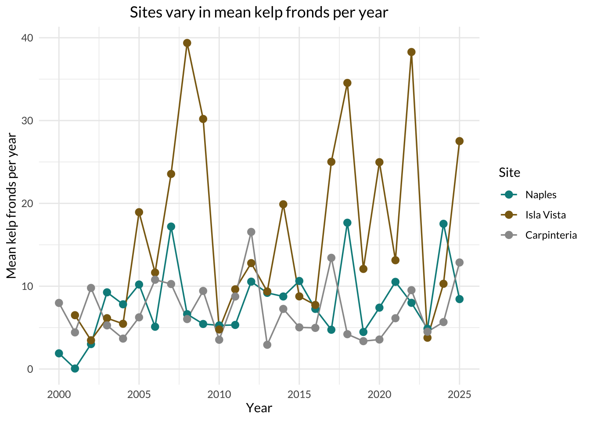
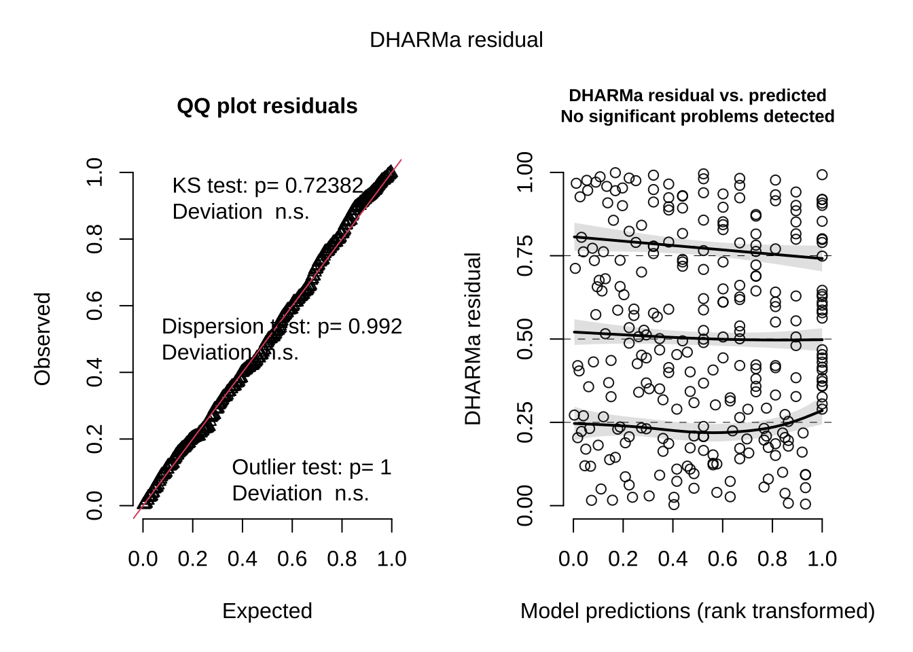
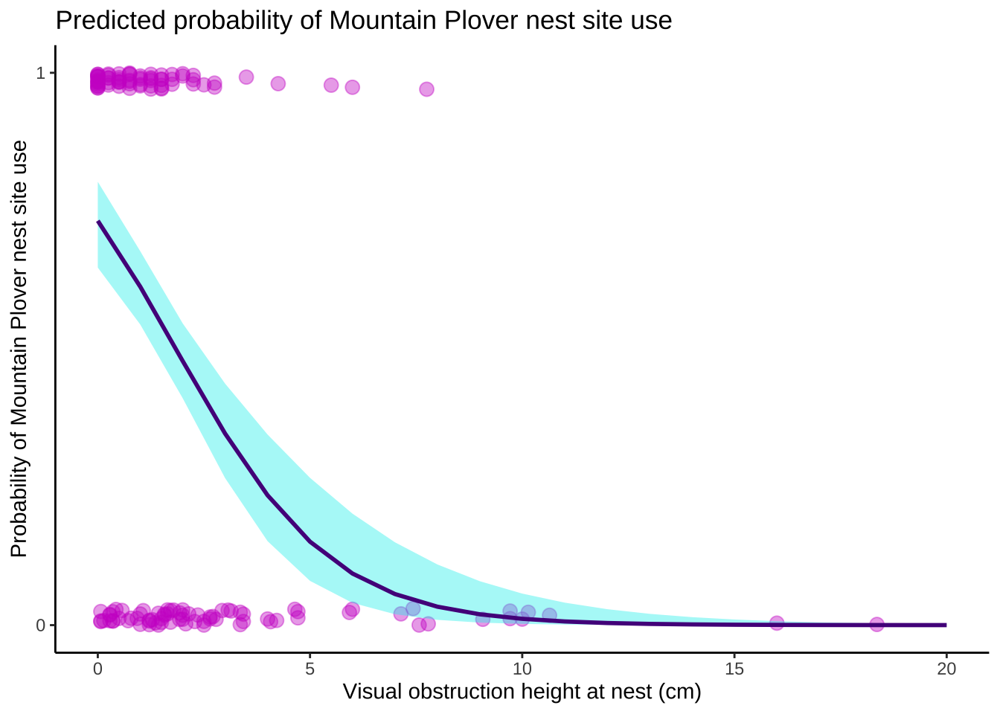
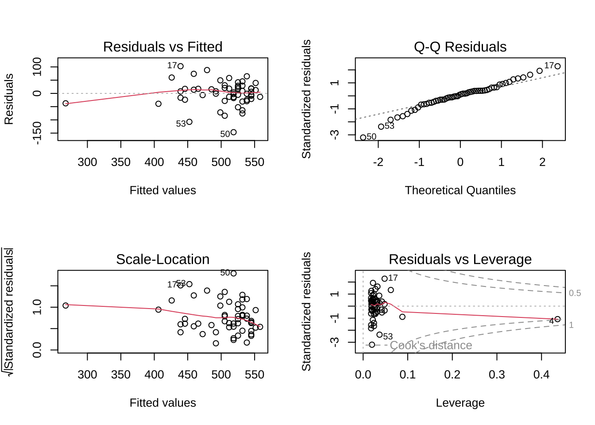
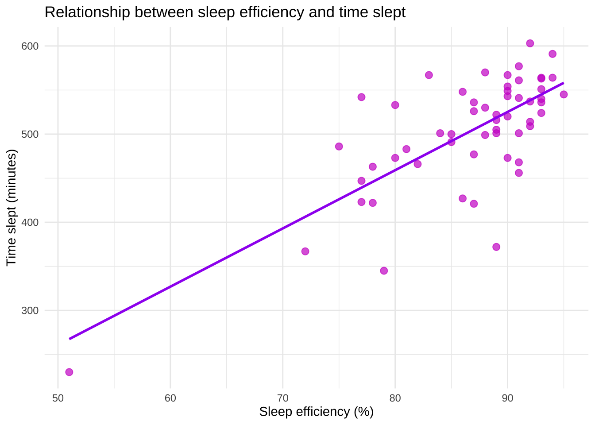
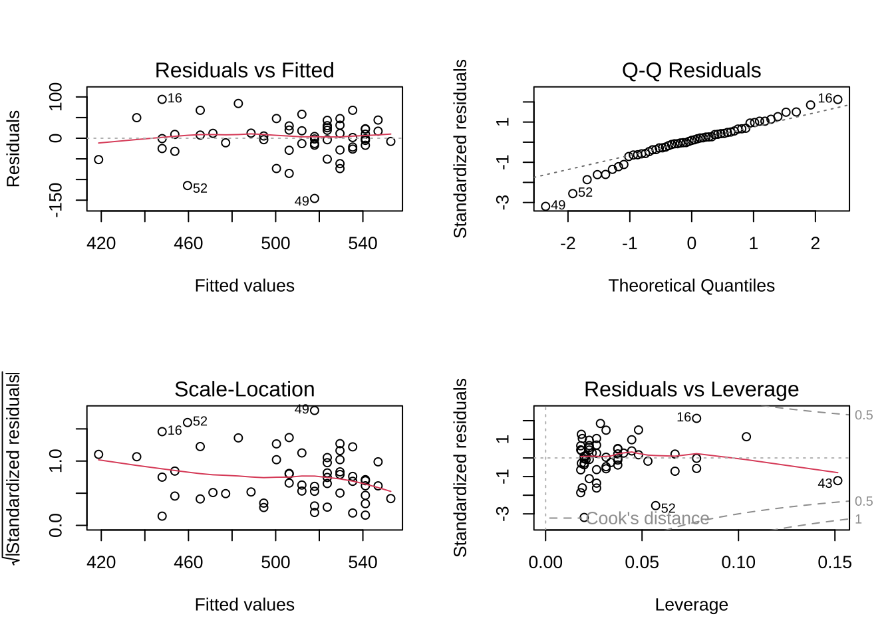
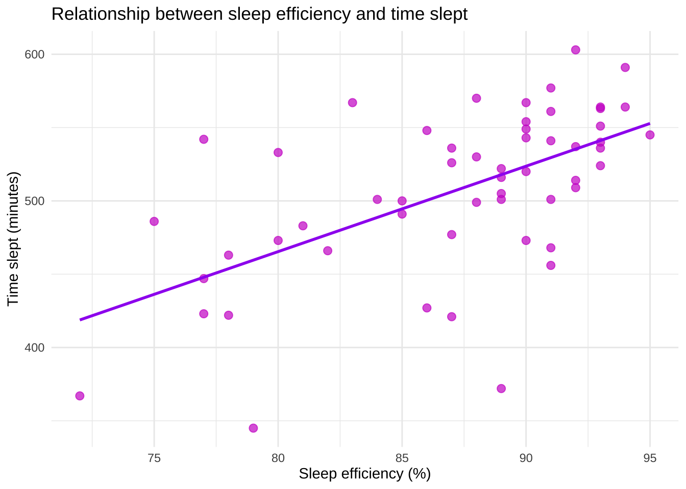
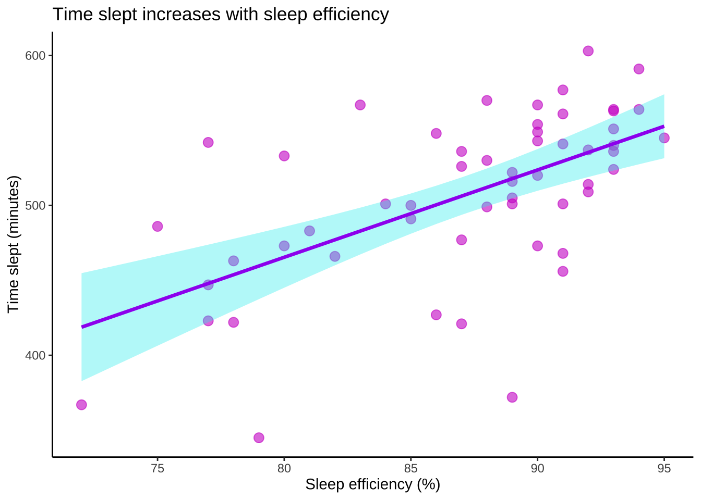

suppressPackageStartupMessages({
library(here) # reads in here package
library(dplyr) # reads in dplyr package
library(forcats) # reads in forcats package
library(janitor) # reads in janitor package
library(showtext) # reads in showtext package
library(ggplot2) # reads in ggplot2 package
library(tidyverse) # reads in tidyverse package
library(broom) # reads in broom package
library(performance) # reads in performance package
library(DHARMa) # reads in DHARMa package
library(tibble) # reads in tibble package
library(knitr) # reads in knitr package
library(ggeffects) # reads in ggeffects package
})
# Stores the kelp data as an object called kelp
kelp <- read.csv(here('data',"Annual_Kelp_All_Years_20250903.csv"))
# Stores the nest site selection data as an object called mopl
mopl <- read.csv(here('data',"MOPL_nest-site_selection_Duchardt_et_al._2019.csv"))
# Stores the personal data as an object called personal_data
personal_data <- read.csv(here('data',"193DS data - stress (6).csv")) Final_Project_Code
Set-up
Problem 1. Research writing
You’re working on a research team trying to understand how environmental variables influence wetland flooding area (measured in \(m^2\)) in the San Joaquin River Delta. Your co-worker runs some analyses and writes up a report, giving it to you to review. In part 1 of the results section of the report, your co-worker has written: We retained the null hypothesis that precipitation doesn’t predict flooded wetland area (p = 0.11).
In part 2 of the results section of the report, your co-worker has written: We retained the null hypothesis that median flooded wetland area does not differ across water year classification (wet, above normal, below normal, dry, critical drought) (p = 0.12).
It’s great that this report is coming together, but you think they can improve on what they’ve written and make it more understandable to a non-statistical audience.
a. Transparent statistical methods
What statistical tests did your co-worker use?
Clearly connect the test to the part that you are addressing (e.g. “In part 1, they used _______. In part 2, they used _______.”).
In part 1, they most likely used a simple linear regression (\(H_0\): precipitation does not affect flooded wetland area.; \(H_A\): precipitation affects flooded wetland area.) because the statement asks whether precipitation predicts flooded wetland area, which is a continuous response variable. In part 2, they most likely used a Kruskal–Wallis rank-sum test (\(H_0\): the median flooded wetland area is the same across all precipitation categories; \(H_A\): the median flooded wetland area differs among precipitation categories).
b. Figure needed
The test in part 2 seems familiar to you, but you think your coworker could provide additional context using a visualization for their test.
Describe one figure that your coworker could make to accompany the statement in part 2.
Be specific about what variables should be on the x-axis, the y-axis, and the visual components of the plot as they relate to the test in addition to naming the type of plot they should make.
A good figure for part 2 would be a boxplot with jittered points. The x-axis would be water year classification (wet, above normal, below normal, dry, critical drought) and the y-axis would be flooded wetland area (\(m^2\)). Visual components of this plot should include: one boxplot for each water year class showing the median and interquartile range, with individual observations overlaid as jittered points so the reader can see spread, overlap, and sample size across categories. This would match the Kruskal–Wallis test well because it visually compares the distributions and medians of flooded wetland area across multiple groups.
c. Suggestions for rewriting
In 1-3 sentences, write new research statements to include relevant components from parts a-b and a full test summary in parentheses to be transparent about the statistical method.
Be sure that your rewritten statements clearly delineate the biological narrative from the statistical summary. See lecture and workshop for examples of writing.
Note that your co-worker didn’t include any information about the test statistic, distribution, etc., and that you only know the p-value. For any part that you do not know, list that part with text. For example, you could write something like: “… \(\alpha\)=significance level…”
Part 1: Flooded wetland area did not show clear evidence of a relationship with precipitation. The statistical test did not provide sufficient evidence to reject the null hypothesis of no association between precipitation and flooded wetland area (Linear regression, F(degrees freedom (numerator), degrees freedom (denominator)) = test-statistic (F), \(R^2\) = R-squared, p = 0.11, \(\alpha\) = significance level).
Part 2: Median flooded wetland area did not differ significantly among water year classifications (wet, above normal, below normal, dry, critical drought). The statistical test did not provide sufficient evidence to reject the null hypothesis that median flooded wetland area was the same across all water year classifications (Kruskal–Wallis test, H(degrees of freedom) = test-statistic (H), p = 0.12, \(\alpha\) = significance level)
d. Interpretation
Based on your co-worker’s analyses, flooded wetland area isn’t affected by precipitation or by the classification of the water year.
In 1-2 sentences, outline:
- one additional variable that could influence the flooded area of a wetland,
- what type of variable it is, and
- why that variable might influence wetland flooding.
One additional variable that could influence flooded wetland area is water-control management intensity, such as whether managers actively impound or deliver water to wetlands. This would likely be a categorical explanatory variable, and it could affect flooding because management infrastructure and water-delivery decisions can directly impact how much water is retained in wetlands.
Problem 2. Data visualization
Navigate to the SBC LTER’s data catalog. Find and download the dataset on giant kelp fronds in the Santa Barbara Channel to your data folder. (Hint: the page on the data catalog is called “KFCD abundance and size of giant kelp”.)
In your set up chunk, read in the data as an object called kelp.
a. Cleaning and summarizing
Create an object called kelp_clean from kelp.
To clean and summarize the data frame, use the functions in the following code chunk. Only use these functions.
The functions are out of order. Put the functions in the right order and use the pipe operator to get the data frame you need.
Annotate each function to demonstrate your understanding of its use.
When you are done with all your cleaning steps:
- display 5 rows from
kelp_cleanusingslice_sample()and - the structure using
str()
kelp_clean <- kelp |> # uses raw data
# standardizes column names to lowercase and replaces spaces with underscores
clean_names() |>
# keep only the three focal sites: IVEE, NAPL, CARP
filter(site %in% c("IVEE", "NAPL", "CARP")) |>
# remove observations with specified values for each date, transect, and quad
filter(!(date == "2000-09-22" & transect == "6" & quad == "40")) |>
# create column 'site_name' with appropriate site names associated site codes
mutate(site_name = case_when(site == "NAPL" ~ "Naples",
site == "IVEE" ~ "Isla Vista",
site == "CARP" ~ "Carpinteria")) |>
mutate(site_name = as_factor(site_name), # converts `site_name` to a factor
# sets the order of the factor 'site_name' for plotting etc.
site_name = fct_relevel(site_name,"Naples", "Isla Vista", "Carpinteria")) |>
group_by(site_name, year) |> # groups data by variables 'site_name' and 'year'
# creates column 'mean_fronds' with mean fronds within each site-year group
summarize(mean_fronds = mean(fronds)) |>
ungroup() # removes grouping from cleaned data set output
kelp_clean |> slice_sample(n = 5) # displays 5 rows from cleaned data set# A tibble: 5 × 3
site_name year mean_fronds
<fct> <int> <dbl>
1 Carpinteria 2019 3.37
2 Isla Vista 2001 6.5
3 Carpinteria 2021 6.13
4 Isla Vista 2004 5.46
5 Carpinteria 2015 5.03str(kelp_clean) # displays structure of cleaned data settibble [77 × 3] (S3: tbl_df/tbl/data.frame)
$ site_name : Factor w/ 3 levels "Naples","Isla Vista",..: 1 1 1 1 1 1 1 1 1 1 ...
$ year : int [1:77] 2000 2001 2002 2003 2004 2005 2006 2007 2008 2009 ...
$ mean_fronds: num [1:77] 1.8947 0.0606 3.0111 9.2596 7.8141 ...b. Understanding the data
The code chunk above includes a line that filters out frond observations from the date 2000-09-22 in transect 6 in quad 40.
In 1-2 sentences, describe why. What is the number for the value of fronds in that “quad” in that “transect”? What does that value represent? Reference the specific place you found information on what that value represents (e.g. in the Summary tab of the data page).
The observation from 2000-09-22 in transect 6, quad 40 is filtered out because the recorded value is -99999 which is a placeholder value rather than a real biological measurement. In the “Files and Data Links” tab the table row “Others” identifies the value -99999 as a “Missing Value Code”, meaning the frond count was not actually recorded for that quadrat and should be excluded from summary statistics.
c. Visualize the data
Recreate the visualization
The specific aesthetic components you need to recreate are:
- the geometries (there are two)
- the text (all axis and legend text, and the title)
- different, custom colors for each site
- the title position
- the panel (a grid without the border)
- use of a custom font (that is consistent across all text in the figure)
# loads the font "Lato" and names it "lato" for later use
font_add_google("Lato", "lato")
# enables showtext
showtext_auto()
ggplot(kelp_clean, # uses cleaned data
aes(x = year, # sets x-axis to year
y = mean_fronds, # sets y-axis to mean_fronds
color = site_name)) + # colors lines by site
geom_line(linewidth = 0.6) + # creates lines connecting yearly mean values
geom_point(size = 2.6) + # adds points for each yearly mean frond value
scale_color_manual( # manually assign custom colors to each site
values = c("Naples" = "cyan4",
"Isla Vista" = "goldenrod4",
"Carpinteria" = "grey60"),
name = "Site") + # sets title of legend
labs(
title = "Sites vary in mean kelp fronds per year", # sets plot title
x = "Year", # sets x-axis title
y = "Mean kelp fronds per year") + # sets y-axis title
# sets scale of labeling x-axis for every 5 years from 2000-2025
scale_x_continuous(breaks = seq(2000, 2025, by = 5)) +
theme_minimal(base_family = "lato") + # applies minimal theme + uses Lato font
theme(
plot.title = element_text(hjust = 0.5), # centered title
legend.position = "right", # legend outside right
panel.border = element_blank(), # no panel border
text = element_text(family = "lato")) # ensures all text uses the Lato font
d. Interpretation
Be specific with the visual components of the plot to support your characterization.
In 1-2 sentences each, describe:
- the site with the most variable mean kelp fronds per year
Isla Vista shows the most variability in mean kelp fronds per year. In the plot, the Isla Vista line and points (colored in brown) fluctuate widely across years, ranging from very low values near 4 fronds to peaks close to 40 fronds which produces large vertical changes between adjacent years.
- the site with the least variable mean kelp fronds per year
Carpinteria shows the least variability in mean kelp fronds per year. The Carpinteria line and points (colored in grey) stay within a relatively narrow vertical range and are generally between about 3 and 17 fronds with more gradually changes across years compared with the other sites.
Problem 3. Data analysis
a. Response variable
In 1-2 sentences, explain what the 1s and 0s mean in this data set biologically.
In this dataset, the response variable is nest site use (nest site use vs. non-use) where a 1 would represent a site that was used by a Mountain Plover for nesting, and a 0 would represent an available but unused site. In the raw dataset, this information comes from the ID column, which is coded as “used” and “available”.
b. Purpose of study
In this problem, you will be examining the potential effects of visual obstruction and distance to prairie dog colony edge on the probability of a nest site being occupied by a Mountain Plover.
In 2-3 sentences for each predictor, describe:
- what kind of variable it is (i.e. continuous, discrete, categorical, etc.),
- how it could possibly influence the probability of Mountain Plover nest site use (i.e. as visual obstruction increases, the probability of Mountain Plover nest site use would ______________ because…), and
- where in the paper you found this information (the specific section, subsection, and paragraph)
Predictor 1: Visual Obstruction (vo_nest) This is continuous predictor because it measures (in cm) the “height at which the vegetation is sufficiently dense to obscure a 2.5-cm wide pole when viewed from a 1-m height.” As visual obstruction increases, the probability of Mountain Plover nest-site use would likely decrease, because plovers generally prefer open habitat with short, sparse vegetation that allow them to detect predators. Additionally, the article states that, “plovers avoided nesting in areas with a maximum vegetation height >11 cm, corresponding with an average visual obstruction of >5 cm” (Discussion Section Paragraph 4).
Predictor 2: Distance to Prairie Dog Colony Edge (edgedist)
This is a continuous predictor, because it is the measured distance from each site to the edge of a prairie dog colony. As distance to the prairie dog colony edge increases, the probability of Mountain Plover nest-site use would likely decrease, because nests nearer colony edges create disturbed, sparsely vegetated habitat that plovers prefer for nesting. According to the article, “taller vegetation may provide protection from predators (Schneider et al. 2006), while vegetation and shrubs may provide better opportunities for thermoregulation, especially important for chicks” (Discussion Section Paragraph 4).
c. Table of models
Make a table of all the models you will need to run. You will run 4 models: a null model, a saturated model, and two other models with different combinations of predictors.
Your table should have 4 columns: (1) model number, (2) visual obstruction, (3) distance to prairie dog colony, and (4) model description.
| model # | visual obs. | distance to prairie dog colony | model_description |
|---|---|---|---|
| 1 | No | No | null model |
| 2 | Yes | Yes | saturated model |
| 3 | Yes | No | visual obstruction only |
| 4 | No | Yes | distance to colony edge only |
d. Run the models
Create a clean dataset to use called mopl_clean. In no particular order:
- clean the column names
- create a new column called
used_binto create 1s and 0s from theidcolumn - select
used_bin,edgedist, andvo_nest
Write your code to run all your models. Do not display any output.
e. Select the best model
Using Akaike’s Information Criterion (AIC), choose the best model.
AIC(mod_1, mod_2, mod_3, mod_4) df AIC
mod_1 1 384.6172
mod_2 3 333.7410
mod_3 2 386.0911
mod_4 2 331.7690In text, write what the best model was (i.e. “The best model as determined by Akaike’s Information Criterion (AIC)…”).
Use the predictors and the response variable to describe the model, not the model number that you assigned.
The best model as determined by Akaike’s Information Criterion (AIC) was the model predicting the probability of Mountain Plover nest site use from visual obstruction height at the nest (vo_nest). This model had the lowest AIC value (331.77) indicating that visual obstruction alone provided the best balance between model fit and complexity among the candidate models.
f. Check the diagnostics
Check your diagnostics for the model you selected using simulated residuals from the DHARMa package.
Display all code and output.
# save the selected best model by the AIC as object `best_model`
best_model <- mod_4
# display the DHARMa diagnostic plots for the simulated residuals
simulateResiduals(best_model, plot = TRUE)
Object of Class DHARMa with simulated residuals based on 250 simulations with refit = FALSE . See ?DHARMa::simulateResiduals for help.
Scaled residual values: 0.5627704 0.9762747 0.6883876 0.8415387 0.9237159 0.7390575 0.9752644 0.9991487 0.8432224 0.7009878 0.6273999 0.7629146 0.7706254 0.8009958 0.9650969 0.6341552 0.3838704 0.7790236 0.718365 0.8568392 ...These plots assess whether the simulated residuals show major deviations from model assumptions. The DHARMa residual vs. predicted output shows that “no significant problems are detected”. The residuals in the QQ plot approximately follow the reference line.
g. Visualize the model predictions
Create a plot showing model predictions for your selected model with 95% confidence intervals around the predictions and the underlying data.
Show and annotate all code. Show the output.
For full credit:
- make sure the x- and y-axis labels are written in full with units if necessary
- take out the gridlines
- use colors that are different from the default
# generate predicted probabilities
mod_preds <- ggpredict(mod_4, # uses selected 'best' model
# uses vo_nest values from 0 to 20 by 1
terms = "vo_nest [0:20 by = 1]")
ggplot(mopl_clean, # uses cleaned data
aes(x = vo_nest, # x-axis is vo_nest
y = used_bin)) + # y-axis is binary column for nest use
geom_jitter(size = 3, # adds jittered data points + sets size
alpha = 0.4, # sets transparency for points
color = "magenta3", # sets point color
height = 0.03, # sets vertical height of jitter
width = 0) + # does not jitter horizontally
geom_ribbon(data = mod_preds, # uses model predictions as data for CI ribbon
aes(x = x, # x is x values (vo_nest)
y = predicted, # y is probability (nest use )
ymin = conf.low, # sets low end of CI
ymax = conf.high), # sets high end of CI
inherit.aes = FALSE, # does not inherit aesthetics
alpha = 0.4, # sets transparency for ribbon
fill = "cyan2") + # sets color for ribbon
geom_line(data = mod_preds, # uses model predictions as data for line
aes(x = x, # x is x values (vo_nest)
y = predicted), # y is probability (nest use )
inherit.aes = FALSE, # does not inherit aesthetics
linewidth = 1, # sets line width
color = "purple4") + # sets color of line
labs(x = "Visual obstruction height at nest (cm)", # sets title for x-axis
y = "Probability of Mountain Plover nest site use", # sets title for y-axis
# sets plot title
title = "Predicted probability of Mountain Plover nest site use") +
# set the y-axis to show the full probability range from 0 to 1
scale_y_continuous(limits = c(0, 1), breaks = c(0, 1)) +
theme_classic() + # sets theme
theme(panel.grid = element_blank()) # remove any gridlines
h. Write a caption for your figure.
Include a figure number, title, description of the figure, and data citation.
Figure 1. Predicted probability of Mountain Plover nest site use decreases as visual obstruction height increases. Transparent pink circles (jittered points) represent individual observations of available and used nest sites, plotted as binary outcomes (0 = available, 1 = used) plotted against visual obstruction height at the nest (cm). TThe dark purple line shows the predicted probability of nest site use from the fitted logistic regression model, and the light blue shaded ribbon represents the associated 95% confidence interval around those predictions. Data originally from: Duchardt, Courtney; Beck, Jeffrey; Augustine, David (2020). Data from: Mountain Plover habitat selection and nest survival in relation to weather variability and spatial attributes of Black-tailed Prairie Dog disturbance [Dataset]. Dryad. https://doi.org/10.5061/dryad.ttdz08kt7.
i. Calculate model predictions
Calculate the predicted probability of Mountain Plover nest site occupancy at 0 on the index of visual obstruction.
Show and annotate all code. Display the output.
# calculates the predicted probability of nest-site occupancy
ggpredict(mod_4, # uses AIC selected 'best' model
terms = "vo_nest [0]") # specifies when visual obstruction = 0# Predicted probabilities of used_bin
vo_nest | Predicted | 95% CI
--------------------------------
0 | 0.73 | 0.65, 0.80When visual obstruction at the nest is 0 cm, the predicted probability of Mountain Plover nest site occupancy 0.73 (95% CI [0.65, 0.80]).
j. Interpret your results
Write 3-5 sentences summarizing what you found, making references to the figure you made in part h and the predictions you calculated in part j. Your summary should include your interpretation of:
- the predicted probability of nest site occupancy at 0 (no visual obstruction)
- what relationships, if any, exist between visual obstruction and distance to prairie dog colony and probability of occupancy
- the biology behind the trends you found - what explains the relationship between visual obstruction and probability of Mountain Plover nest site occupancy?
The probability of Mountain Plover nest site occupancy was highest when there was no visual obstruction at the nest: at vo_nest = 0, the model predicted an occupancy probability of about 0.73 (95% CI [0.65, 0.80]), meaning a site with completely open visibility had about a 73% chance of being used. As shown in Figure 1, the predicted probability of nest site use decreased sharply as visual obstruction increased, with the fitted line (purple) dropping toward 0 and the 95% confidence ribbon (blue) representing the uncertainty around that decline. In contrast, distance to prairie dog colony edge was not part of the best model (determined by AIC), which suggests it did not explain nest-site occupancy as well as visual obstruction in this dataset. Biologically, this pattern is consistent with Mountain Plover preference of open, sparsely vegetated nesting habitat, so low visual obstruction may improves their ability to detect predators and is a better match to the short nesting habitat they tend to prefer.
Problem 4. Affective and exploratory visualizations
a. Comparing visualizations
Compare and contrast your affective visualization from Homework 3 and the exploratory visualizations you made for Homework 2. In 1-3 sentences each, explain:
- How are the visualizations different from each other in the way you have represented your data?
The exploratory visualizations from Homework 2 focus on clearly displaying the underlying data and statistical relationships using simple and straightforward plots (boxplots and scatterplots). In contrast, the affective visualization from Homework 3 represents the data more abstractly using color, pattern, and opacity to evoke a visual impression rather than emphasizing exact numeric values. This shifts the focus from precise statistical interpretation to communicating the overall intensity or variation in stress and sleep patterns.
- What similarities do you see between all your visualizations?
All of the visualizations I created are based on the same underlying dataset about time slept and time stressed and each attempt to communicate patterns in these variables. They each organize the data visually so that viewers can detect differences or relationships between variables. Despite stylistic differences, they all attempt to represent the same core information/patterns relating to sleep, stress, and sleep efficiency over time/by day of week.
- What patterns (e.g. differences in means/counts/proportions/medians, trends through time, relationships between variables) do you see in each visualization? Are these different between visualizations? If so, why? If not, why not?
The exploratory plots show that time stressed tends to vary across days of the week and that there is some relationship between time slept and time stressed. The affective visualization communicates a similar pattern but in a more abstract way, suggesting variation in stress intensity through color variation rather than exact values. The underlying patterns are the same because the data remain unchanged, but the exploratory plots make the patterns clearer because they retain the quantitative scale and use exact values while the affective visualization is more emotional in nature.
- What kinds of feedback did you get during week 9 in workshop or from the instructors? How did you implement or try those suggestions? If you tried and kept those suggestions, explain how and why; if not, explain why not.
During week 9 I received 2 main pieces of feedback from my group: consider changing the representation of sleep efficiency through opacity so that differences in efficiency are easier to see visually & add something to it that relates to your theme of tracking sleep data. As a result, I scaled my efficiency scores using the equation \(opacity=0.2+\frac{x-0.51}{0.95-0.51}*0.8\) (maximum efficiency = 95%, minimum efficiency = 51%) to better emphasize differences in efficiency and added a night sky background behind my color strips to coincide with the topic of my data as well as increase its creativity.
b. Designing an analysis
Based on your response variable and one of your potential predictor variables (your focal variable or otherwise), propose one analysis that we talked about this quarter that you could apply to answer your research question(s).
(NOTE: I slightly modified the aim of my personal data project after homework 2. I pivoted my response variable to be time slept and my main predictor to be sleep efficiency with time spent stress remaining as an additional potential predictor.)
Additionally, explain why this analysis is appropriate with regard to:
- your question
- your variables and what types of variables they are
Proposed analysis: Linear regression
A linear regression analysis could be used to test how sleep efficiency (predictor variable) predicts total time slept (response variable). This analysis is appropriate because my research question asks whether changes in one continuous variable (sleep efficiency) are associated with changes in another continuous variable (time slept). Since both variables are numeric and measured on continuous scales, linear regression allows me to model time slept as a function of sleep efficiency and estimate how changes in sleep efficiency are associated with changes in sleep duration.
c. Check any assumptions and run your analysis
In this section, create two subsections (in the appropriate order) to: Show all code and output.
- check any assumptions
# Cleaning Data
personal_data_clean <-personal_data |> # uses initial personal data
# standardizes column names to lowercase and replaces spaces with underscores
clean_names() |>
# mutates sleep efficiency to be a numeric variable
mutate(sleep_efficiency = as.numeric(str_remove(sleep_efficiency, "%"))) |>
# selects only time_slept_minutes + sleep_efficiency
select(time_slept_minutes, sleep_efficiency)
# creates model with sleep_efficiency as the predictor
sleep_lm <- lm(time_slept_minutes ~ sleep_efficiency,
data = personal_data_clean) # uses cleaned data
# looks at model diagnostics
par(mfrow = c(2, 2))
plot(sleep_lm)
par(mfrow = c(1, 1))
# scatter plot to assess linearity
ggplot(personal_data_clean, # uses cleaned data
aes(x = sleep_efficiency, # x-axis is sleep efficiency (predictor)
y = time_slept_minutes)) + # y-axis is time slept (min) (response)
geom_point(color = "magenta3", # sets point color for each obs
size = 2.5, # sets point size
alpha = 0.7) + # sets point transparency
# creates purple fit line of linear regression model
geom_smooth(method = "lm", se = FALSE, color = "purple") +
labs(x = "Sleep efficiency (%)", # labels x-axis
y = "Time slept (minutes)", # labels y-axis
# creates title of the plot
title = "Relationship between sleep efficiency and time slept") +
theme_minimal() # sets theme to minimal
There is one outlier as indicated by the scale-location plot and scatter plot. I will remove the outlier and recheck the assumptions of the updated model.
personal_data_no_outlier <- personal_data_clean |> # uses cleaned data
filter(time_slept_minutes != 230) # remove the low-sleep outlier
# creates model with sleep_efficiency as the predictor
updated_sleep_lm <- lm(time_slept_minutes ~ sleep_efficiency,
# uses cleaned data with the outlier removed
data = personal_data_no_outlier)
# looks at model diagnostics
par(mfrow = c(2, 2))
plot(updated_sleep_lm)
par(mfrow = c(1, 1))
# scatterplot to assess linearity
ggplot(personal_data_no_outlier, # uses cleaned data with the outlier removed
aes(x = sleep_efficiency, # x-axis is sleep efficiency (predictor)
y = time_slept_minutes)) + # y-axis is time slept (min) (response)
geom_point(color = "magenta3", # sets point color for each obs
size = 2.5, # sets point size
alpha = 0.7) + # sets point transparency
# creates purple fit line of linear regression model
geom_smooth(method = "lm", se = FALSE, color = "purple") +
labs(x = "Sleep efficiency (%)", # labels x-axis
y = "Time slept (minutes)", # labels y-axis
# creates title of the plot
title = "Relationship between sleep efficiency and time slept") +
theme_minimal() # sets theme to minimal
The linearity assumption appears reasonably met because the scatterplot of sleep efficiency versus time slept and the residuals vs. fitted plot does not show a strong curved pattern, indicating that a linear relationship is present The normality assumption is reasonably met because the Q–Q plot shows residuals that generally follow the reference line, with only minor deviations in the tails. The homoscedasticity assumption appears to be met because the scale-location plot shows relatively consistent spread of residuals across fitted values. Independence of errors is assumed because each observation represents a different day of sleep data and therefore observations are not expected to influence each other.
Removing the outlier with time_slept_minutes = 230 was done because it is substantially lower than the rest of the observations and would have a disproportionate influence on model fit and residual behavior. Since linear regression is sensitive to extreme points, excluding this value improves the diagnostics and makes the model a better representation of the overall relationship between sleep efficiency and time slept for the majority of the data.
- run the analysis you proposed in part b
- (if applicable) calculate an effect size
# outputs summary of linear model to run analysis
summary(updated_sleep_lm)
Call:
lm(formula = time_slept_minutes ~ sleep_efficiency, data = personal_data_no_outlier)
Residuals:
Min 1Q Median 3Q Max
-145.837 -19.231 4.163 24.096 94.086
Coefficients:
Estimate Std. Error t value Pr(>|t|)
(Intercept) -0.7568 96.7550 -0.008 0.994
sleep_efficiency 5.8269 1.1070 5.263 2.61e-06 ***
---
Signif. codes: 0 '***' 0.001 '**' 0.01 '*' 0.05 '.' 0.1 ' ' 1
Residual standard error: 46.14 on 53 degrees of freedom
Multiple R-squared: 0.3433, Adjusted R-squared: 0.3309
F-statistic: 27.7 on 1 and 53 DF, p-value: 2.609e-06# (effect size determined by R-sqaured output in summary)d. Create a visualization
Create a visualization that reflects the analysis you ran in part c (i.e. if you compared medians, you should create a plot representing medians; if you built a model, you should show predictions and confidence intervals).
For full marks, your plot should:
- have labelled x- and y-axes with units
- use a different theme than the default
- use different colors than the default
- show the underlying data
# generate predictions based on linear model
model_preds <- ggpredict(updated_sleep_lm, # uses updated model
# predictions based on sleep_efficiency
terms = "sleep_efficiency")
# create plot
ggplot(personal_data_no_outlier, # uses cleaned data with the outlier removed
aes(x = sleep_efficiency, # x-axis is sleep efficiency (predictor)
y = time_slept_minutes)) + # y-axis is time slept (min) (response)
geom_point(color = "magenta3", # adds magenta data points for each obs
size = 3, # sets point size
alpha = 0.6) + # sets point transparently
geom_ribbon(data = model_preds, # uses model predictions as data for CI ribbon
aes(x = x, # x is x values (sleep_efficiency)
y = predicted, # y is predicted values (time_slept_minutes)
ymin = conf.low, # sets low end of CI
ymax = conf.high), # sets high end of CI
inherit.aes = FALSE, # does not inherit aesthetics
alpha = 0.35, # sets transparency for ribbon
fill = "cyan2") + # sets color for ribbon
geom_line(data = model_preds, # uses model predictions for regression line
aes(x = x, # x is x values (sleep_efficiency)
y = predicted), # y is predicted values (time_slept_minutes)
inherit.aes = FALSE, # does not inherit aesthetics
linewidth = 1.2, # sets line width
color = "purple") + # sets color of line
labs(x = "Sleep efficiency (%)", # sets x-axis title
y = "Time slept (minutes)", # sets y-axis title
title = "Time slept increases with sleep efficiency") + # sets plot title
theme_classic() # different from default theme
e. Write a caption
Write a caption for the figure you created in part d. Include a figure number, title, description of visual components (including but not limited to shapes, colors, lines, etc.).
Figure 2. Time slept increases with sleep efficiency. Pink circles/points represent individual nightly observations of time slept (minutes) plotted against sleep efficiency (a percentage out of 100 as calculated by an Oura Ring). The purple line represents the fitted linear regression model predicting time slept from sleep efficiency, while the light blue shaded ribbon shows the 95% confidence interval around the model predictions. Together, the points, line, and shaded confidence band illustrate a statistically significant positive relationship between sleep efficiency and total sleep duration.
f. Write about your results
In 2-4 sentences, write about your results (with appropriate components in the parenthetical statistical summary).
Include any components that would provide additional context to your interpretation (e.g. differences in means) or allow you to quantify the magnitude of effects (e.g. effect sizes).
The linear regression showed a significant positive relationship between sleep efficiency and time slept (Linear regression, F(1, 53) = 27.7, \(R^2\) = 0.33 , p < 0.001, \(\alpha\) = 0.05). Based on model predictions, for each 1 unit (1 %) increase in sleep efficiency, we expect an increase in time slept of 5.83 minutes (SE = 1.107). The model had an adjusted \(R^2\) of 0.33, meaning sleep efficiency explained about 33% of the variation in time slept, which indicates a moderate effect size.
g. Sharing your affective visualization
Completed in workshop during week 10.